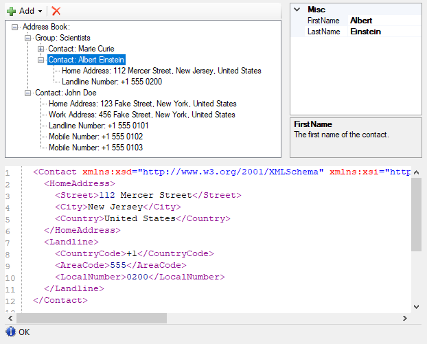

NanoByte Structure Editor
NanoByte Structure Editor is a .NET library that helps you build split-screen editors for your data structures, consisting of:
- a collapsible tree-view of the data structure,
- a graphical editor for the currently selected node in the tree (auto-generated or custom) and
- a text editor with a serialized (XML or JSON) representation of the currently selected node.
This allows you to create an IDE-like experience for your users when editing complex domain specific languages, configuration files, etc..

Choosing a frontend
The library is available for two GUI toolkits. Both share the same API for describing your data structure, storage and undo/redo. Add a reference to the NuGet package matching your application:
| NanoByte.StructureEditor.WinForms | NanoByte.StructureEditor.EtoForms | |
|---|---|---|
| GUI toolkit | Windows Forms | Eto.Forms |
| Platforms | Windows | Windows, Linux, macOS |
| Frameworks | .NET Framework 4.5+, .NET 10.0+ | .NET Framework 4.7.2+, .NET 10.0+ |
| Editor control | StructureEditor<T> | StructureEditor<T> |
| Default node editor | PropertyGridNodeEditor<T> | PropertyEditorNodeEditor<T> |
| Text editor | ICSharpCode.TextEditor with syntax highlighting | Plain monospaced text box, replaceable via TextEditorFactory.Default |
| Sample | Sample.WinForms | Sample.EtoForms |
An Eto.Forms application additionally needs an Eto.Platform.* package for each platform it runs on (e.g., Eto.Platform.Windows, Eto.Platform.Gtk, Eto.Platform.Mac64).
Code snippets in this documentation work with both packages unless shown in separate tabs or marked otherwise. Import the namespace matching your package (NanoByte.StructureEditor.WinForms or NanoByte.StructureEditor.EtoForms).
Usage
Initialization
Create an instance of StructureEditor<T> and add it to your Form:
Alternatively, you may want to derive your own class from StructureEditor<T>. This lets you keep the description of your data structure in one place and, with WinForms, use the graphical designer in Visual Studio (which does not support generic types) to place the editor on your Form.
public class MyDataEditor : StructureEditor<MyData>
{}
You need to "describe" your data structure to the editor. You can do this directly after instantiating the editor or in the constructor of your derived class.
- Call DescribeRoot() and then use the fluent API provided as a return value to describe the properties on your main data type.
- Call Describe
() to describe the properties on a data typeTContainerexposed by another property. You can use multiple calls with different type parameters to describe arbitrarily deep hierarchies.
The fluent API provides the following methods:
.AddProperty()describes a property..AddRequiredProperty()describes a property that cannot be set tonull..AddPolymorphicProperty()describes a polymorphic property. After calling it you chain.AddElement()calls for each specific type the property can hold..AddRequiredPolymorphicProperty()describes a polymorphic property that cannot be set tonull..AddList()describes a list..AddPolymorphicList()describes a polymorphic list. After calling it you need to chain.AddElement()calls for each specific type of element the list can hold.
There are numerous overloads for each of these methods, e.g., allowing you to specify a custom editor control for a data type or to keep the auto-generated one.
editor.DescribeRoot("Address Book")
.AddList("Group", x => x.Groups);
editor.Describe<IContactContainer>()
.AddList("Contact", x => x.Contacts);
editor.Describe<Contact>()
.AddRequiredProperty("Home Address", x => PropertyPointer.For(() => x.HomeAddress))
.AddProperty("Work Address", x => PropertyPointer.ForNullable(() => x.WorkAddress))
.AddPolymorphicList(x => x.PhoneNumbers)
.AddElement("Landline Number", () => new LandlineNumber())
.AddElement("Mobile Number", () => new MobileNumber());
Storage
Use the Open() method to load an XML file into the editor:
editor.Open(CommandManager<AddressBook>.Load(path));
Use the Save() method on the CommandManager property to save the editor's content as an XML file:
editor.CommitPendingChanges(); // Eto.Forms only
editor.CommandManager.Save(path);
With Eto.Forms, input in a control that still has the focus may not have been applied yet. Call CommitPendingChanges() before saving to make sure the latest input is included.
See Undo, redo and persistence for details.
Serialization formats
The text editor uses XML by default. To use JSON (System.Text.Json) instead, add a reference to the NanoByte.StructureEditor.Json NuGet package and set the Serializer property to JsonStructureSerializer:
editor.Serializer = JsonStructureSerializer.Instance;
To load and save files in the same format, use SerializingCommandManager<T>. Passing one to Open() also sets the editor's Serializer:
editor.Open(SerializingCommandManager<AddressBook>.Load(path, JsonStructureSerializer.Instance));
editor.CommandManager.Save(path);
For Newtonsoft.Json, add a reference to the NanoByte.StructureEditor.NewtonsoftJson instead and use NewtonsoftJsonStructureSerializer.
Polymorphic lists and properties need extra attributes or settings to round-trip through JSON. See Serialization formats for details.
Samples
Take a look at the sample projects for a more complete setup, including custom node editors and undo/redo functionality. Both use the same data model from Sample: